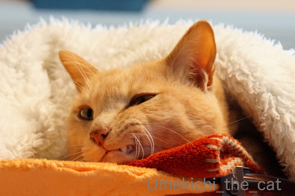
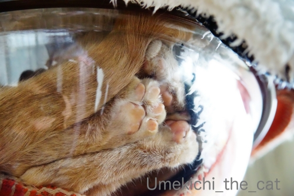
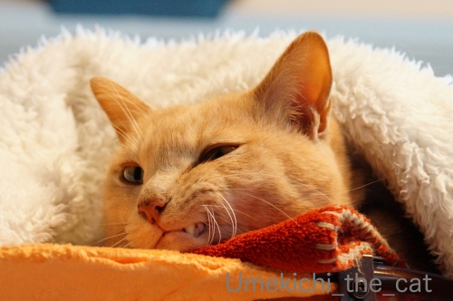
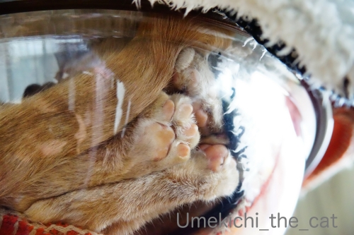
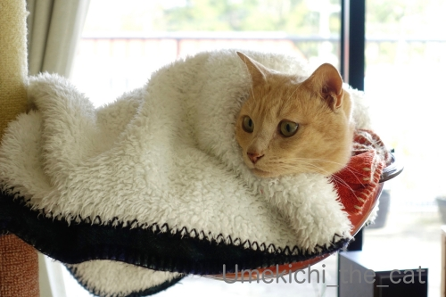
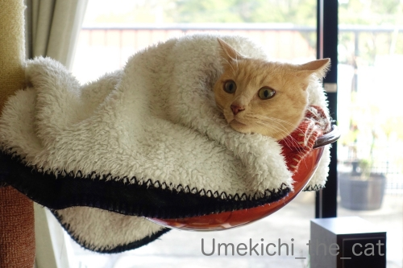
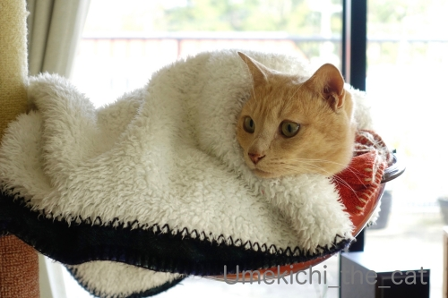
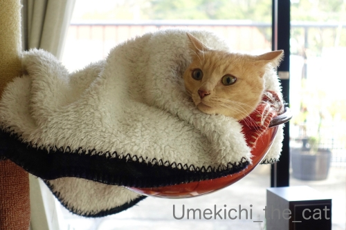

乾燥の季節 [梅吉]
乾燥しがちな日が続きますね。
梅吉を触るとぱちっと静電気が起きて嫌な顔されることもしばしば(⌒-⌒;

乾燥して？くちびるが歯にくっついて閉まらなくなってましたw
「ムキ」っとしたまま寝てたのでお口を閉めてあげる。

先日買ったもふもふもの猫ベッドも使ってますが
やっぱりお気に入りはキャットタワーのクリアボール。
新春肉球むぎゅむぎゅ大会！！0(≧▽≦)0
クリアボール、
クリアな視界を生かして寝たふりしながら下僕を観察している事もあるんですよ。
ふと見ると目があってなぜか焦る下僕・・・

この写真にはこちらを観察する梅吉の目が写ってます。
わかりますか？(≧▽≦)
※おっとは「潜望鏡を覗いているようだ」と言ってます＾＾
クリアボールでぬくぬくも良いようですが
エアコンで温まったフローリングが気持ち良いことにも気づいたようです。
（7秒。環境音入ってます）
温風を浴びてのびーん！！
そのままおかーさんににじり寄ってきてバリバリバリバリ・・・
爪とぎにされました( ´艸｀)
 ↑ガブッと一押し↑
↑ガブッと一押し↑
梅吉を触るとぱちっと静電気が起きて嫌な顔されることもしばしば(⌒-⌒;

乾燥して？くちびるが歯にくっついて閉まらなくなってましたw
「ムキ」っとしたまま寝てたのでお口を閉めてあげる。

先日買ったもふもふもの猫ベッドも使ってますが
やっぱりお気に入りはキャットタワーのクリアボール。
新春肉球むぎゅむぎゅ大会！！0(≧▽≦)0
クリアボール、
クリアな視界を生かして寝たふりしながら下僕を観察している事もあるんですよ。
ふと見ると目があってなぜか焦る下僕・・・
この写真にはこちらを観察する梅吉の目が写ってます。
わかりますか？(≧▽≦)
※おっとは「潜望鏡を覗いているようだ」と言ってます＾＾
クリアボールでぬくぬくも良いようですが
エアコンで温まったフローリングが気持ち良いことにも気づいたようです。
（7秒。環境音入ってます）
温風を浴びてのびーん！！
そのままおかーさんににじり寄ってきてバリバリバリバリ・・・
爪とぎにされました( ´艸｀)
2020年のえべっさんもやっぱり宵えびすだよ！ [梅吉]

関西ではひょっとしたらお正月の初詣よりも重要な行事かも？と思われる「えべっさん」。
「えべっさん」とはえびす神社の例祭「十日戎」の通称です。
大阪の今宮戎神社には
9日宵えびす 、10日本えびす 、11日残り福の３日間で100万人もの人がお参りするのだとか。
2017年、2018年、2019年のえべっさんの記事です。
我が家は毎年近くの神社のえべっさんにお参りしています。

昼間、お買い物途中にのぞいたら結構な賑わい。
鯛の潮汁のお振る舞いがあったり餅まきがあったりするんですよね＾＾

我が家がお参りしたのは夕方になってから。
この時間になると混雑はなくのんびりした雰囲気の中で参拝できます。

ご祈祷中です。

福笹をいただいて縁起物をつけていただきました。
顔見知りになった感のある「福おばちゃん」0(≧▽≦)0今年もおまけしてくれました！
お兄さん達に縁起担ぎの大阪じめで手打ちをしていただいて・・・

最後はやっぱりこのお方！
でっかい招き猫さんの反応は・・・・・
（20秒です。環境音あり）
誘った感ありありですけどー。
今年もしっかり福をキャッチしていただけそうです！

夜の神社は雰囲気あります。
良い月も出ていましたよ。
洗濯機のお兄さんは気に入ったらしい [梅吉]
おっとのインフルエンザ、月曜には熱も下がり火・水と自宅療養。
木曜日からお仕事始めとなりました。
私は！どうやらインフンルエンザウィルスに勝った模様![[手（チョキ）]](https://blog.ss-blog.jp/_images_e/87.gif)
いつも通りよく寝てよく食べて（八分目ですよ）変わったことといえば
いつにも増してお野菜を多めにとってビタミンCのサプリメントを飲んでたことぐらいかな。
ご心配いただいた皆様、ありがとうございましたm(_ _)m
**************************************************************************************************************************
![[猫]](https://blog.ss-blog.jp/_images_e/101.gif) なんや！なんや！！
なんや！なんや！！
とビックリまなこの梅吉さんw
先月の消防施設点検に続いてまたもや寝込みを襲われました。
かれこれ15、6年？使った洗濯機を買い替えました。
時々指示以外のことを勝手に始めたり動きが怪しかったので本当に嬉しい。
（例：給水ホースが繋がってない！とエラーが出る。延々すすぎを繰り返すなど、など）

古いのを運び出したり、新しいのを運び入れたりする音を聞いて起き上がってきました。

設置する位置などをお兄さんと確認し合うおかーさん。
・・・・と、ものすごく腰の引けたカフェオレ色がお兄さんの靴下に迫ってます！
お兄さんと話をしていたので気づかなかった私。
それをニヤニヤしながら撮影するおっとw

洗濯機の簡単な使用方法＆注意点の説明をするお兄さんの足にすりすりするカフェオレ色。
私はこの辺りで梅吉がいることに気づきました。
このすりすりを放っておくと次はダンゴムシになって足にガブ蹴りするのです！！
すぐに捕獲される梅吉wwwww
作業が全て終了するまで20分くらい？素早いお仕事で助かりました＾＾
新入りのチェックを入念に行ってます。
このあと何に興奮したのかわーわー鳴きながら走り回ってました(⌒-⌒;

初稼働！
聞きなれないモーター音にイカ耳！！
ドラム式とも思ったのですが「使いにくくて縦型に戻したい」なんて話も聞いたし
ドラム式じゃなきゃいけない理由もなかったので使い慣れた縦型を買いました。
今の洗濯機は縦型でも乾燥機能は標準搭載がほとんどなんですね。
それとゴミを取るネットがなくなってました。
お手入れしやすいカートリッジ式のフィルターみたいなのが付いてます。
へー！！こんなの初めて見ました。
え？私の認識古すぎます？？
洗剤＆柔軟剤の自動投入機能もなくてもいいんじゃない？と思っていたのですが
これが思いの外便利でにっこり。
そしてなにより稼働音が静か！！
古いのは「働いてますよー」と大きな音がしていたのですが
新しいのはだまって仕事をこなす感じ。
最初のうちは本当に動いているのか心配になって時々様子を見に行っちゃいましたw
日本の家電は日々進歩してますものね。（最近はちょっと元気ないけど）
私の知らない約15年間の洗濯機の劇的な進歩を目の当たりにしたのでした。

毎日新入りの働きぶりをチェックしに来る梅吉さん。
フタが傾斜しているので山岳地帯に住むヤギさんみたいにあちを踏ん張ってます＾＾
↑ガブッと一押し↑
木曜日からお仕事始めとなりました。
私は！どうやらインフンルエンザウィルスに勝った模様
いつも通りよく寝てよく食べて（八分目ですよ）変わったことといえば
いつにも増してお野菜を多めにとってビタミンCのサプリメントを飲んでたことぐらいかな。
ご心配いただいた皆様、ありがとうございましたm(_ _)m
**************************************************************************************************************************
とビックリまなこの梅吉さんw
先月の消防施設点検に続いてまたもや寝込みを襲われました。
かれこれ15、6年？使った洗濯機を買い替えました。
時々指示以外のことを勝手に始めたり動きが怪しかったので本当に嬉しい。
（例：給水ホースが繋がってない！とエラーが出る。延々すすぎを繰り返すなど、など）
古いのを運び出したり、新しいのを運び入れたりする音を聞いて起き上がってきました。
設置する位置などをお兄さんと確認し合うおかーさん。
・・・・と、ものすごく腰の引けたカフェオレ色がお兄さんの靴下に迫ってます！
お兄さんと話をしていたので気づかなかった私。
それをニヤニヤしながら撮影するおっとw
洗濯機の簡単な使用方法＆注意点の説明をするお兄さんの足にすりすりするカフェオレ色。
私はこの辺りで梅吉がいることに気づきました。
このすりすりを放っておくと次はダンゴムシになって足にガブ蹴りするのです！！
すぐに捕獲される梅吉wwwww
作業が全て終了するまで20分くらい？素早いお仕事で助かりました＾＾
新入りのチェックを入念に行ってます。
このあと何に興奮したのかわーわー鳴きながら走り回ってました(⌒-⌒;
初稼働！
聞きなれないモーター音にイカ耳！！
ドラム式とも思ったのですが「使いにくくて縦型に戻したい」なんて話も聞いたし
ドラム式じゃなきゃいけない理由もなかったので使い慣れた縦型を買いました。
今の洗濯機は縦型でも乾燥機能は標準搭載がほとんどなんですね。
それとゴミを取るネットがなくなってました。
お手入れしやすいカートリッジ式のフィルターみたいなのが付いてます。
へー！！こんなの初めて見ました。
え？私の認識古すぎます？？
洗剤＆柔軟剤の自動投入機能もなくてもいいんじゃない？と思っていたのですが
これが思いの外便利でにっこり。
そしてなにより稼働音が静か！！
古いのは「働いてますよー」と大きな音がしていたのですが
新しいのはだまって仕事をこなす感じ。
最初のうちは本当に動いているのか心配になって時々様子を見に行っちゃいましたw
日本の家電は日々進歩してますものね。（最近はちょっと元気ないけど）
私の知らない約15年間の洗濯機の劇的な進歩を目の当たりにしたのでした。
毎日新入りの働きぶりをチェックしに来る梅吉さん。
フタが傾斜しているので山岳地帯に住むヤギさんみたいにあちを踏ん張ってます＾＾
梅吉のお正月休み [梅吉]

ぐる

りん

ぱっ！

からの〜、けりけりけりけり

時々放心しながら休憩して
思い出した様に攻撃。
ちゃんと痛そうなところにキバを立てようとします（じゃれついてるだけです。痛いけどw ）
と、いつものお休みの日はこんな感じでおっとと梅吉のプロレスが見られるのですが・・・
インフルエンザの症状がまだ続いているおっと。
熱が38℃くらいになったり下がったりを繰り返してます。
土曜日にはかかりつけの病院で点滴をして抗生剤等を処方されました。
おっとの会社は感染症にかかったら
「発熱がおさまってからのち２日間は自宅療養すること」と決まっているそうで
（ウィルス撒き散らすから会社に来るな！ってことです）
月曜日から仕事始めですが後２〜3日はお休みかな。
モリモリじゃないけどご飯も食べているしそのうち治るでしょう＾＾

で、梅吉はナース活動に励んでます！
おっとが座るとすかさず膝に乗って温めてあげるw
・・・・・って、体温が高いので気持ち良いのだと思われます( ´艸｀)
でも、夜中時々枕元で様子を見ているし（一緒には寝ない）
なにより足タックルなどで
と誘わない。
とわかっているのでしょうか( ´艸｀)
自然界なら弱っている生き物＝獲物なんでしょうけど
おとーさんじゃ獲物にならないしw 美味しくなさそうだしwww
おっとは「梅吉は心配してくれてるんだ！優しい子だねー」なんて解釈してますけど0(≧▽≦)0
今現在私にインフルエンザの症状は一切現れていません。
このまま乗り切るぞー！
今年の干支になったねこ [梅吉]

年末わたわたしながら買い物をしていた時に見かけたこの被り物。
色と形から「ねずみんさんだ！」と思い込んで買ったのですが
家でよく見たらクマさんだった(⌒-⌒;
クマさんにこの色使うー！？と毒づきながら少々手を加えてみた。

家にあった白い布を切って歯にみたててボンドでぺたり。
我ながら雑な仕事だと思っていたら案の定おっとに「歯がかわいくない」と言われました(ｰ ｰ;)
剥がそうにもがっちりくっついているのでこのまま続行w

とりあえずクマさんではなくなりましたよね！
・・・・・そう思ってやってくださいm(_ _)m
【追記】
年明け早々発熱して辛そうなおっと。
今朝休日救急病院に行ったのですがインフルエンザ検査は陰性。
でも！！夜になって39℃の熱。
これ絶対インフルエンザですよねぇ。
もうゾフルーザなど早期治療薬が効く時期は過ぎてしまったと思われます。
あとは寝て治すしかないなw
そしてきっと私にも♪来る〜、きっと来る〜♪
私の免疫力とインフルエンザウィルスの勝負、いざっ！！
次回のブログ更新がなかったら「やられた」と思ってくださいwww
年初めはきりりと [梅吉]
新年明けましておめでとうございます

本年が皆様にとって実り多い一年になりますようにm(_ _)m
お正月からきりりとお顔を作ってくれた梅吉さん0(≧▽≦)0

最初はすごーくやる気なさそうだったんですけどw
せやかて わし るすばんやったんやで
・・・・・(⌒-⌒; そのお話はまた後日。
皆様、帰省先でご自宅ではたまた旅先で？佳いお正月をお過ごしくださいませ。
本年も当ブログと梅吉をよろしくお願い致します。
↑ガブッと一押し↑
本年が皆様にとって実り多い一年になりますようにm(_ _)m
お正月からきりりとお顔を作ってくれた梅吉さん0(≧▽≦)0
最初はすごーくやる気なさそうだったんですけどw
・・・・・(⌒-⌒; そのお話はまた後日。
皆様、帰省先でご自宅ではたまた旅先で？佳いお正月をお過ごしくださいませ。
本年も当ブログと梅吉をよろしくお願い致します。
なじむまでの一週間〜今年もお世話になりました〜 [梅吉]

一週間ほど前にゃんこベッドを買いました。
ふふふ(ΦωΦ)
梅吉が何処にいるかわかりますかー！
ここまでなじむまでの一週間を振り返ります。
ベッドが届いた日。
圧縮された状態で届きましたよ。
早速チェックする梅吉さん。

・・・と、がぶーっ！！(⌒-⌒
きばの鋭い一付きであっという間に穴があきベッドがどんどん膨らんできます。

袋から出して形を整えると

あっという間に興味を失い離れたところから様子を伺うのみ。
一番の盛り上がりは袋をかじってた瞬間というwww

翌日、ベッドを洗濯してエアコン直下で乾かしていたら
興味を示した！？

シュタッ！とベッドの方に向かったので期待していると

興味はエアコン。
ここで何か言いたそうな顔していたのでベッドを避けるとその場所で寝始めました(ｰ ｰ;)

釈然としないので寝ている梅吉にベッドをかぶせてみた。
（変な形をしているのは裏返しだからです）

２〜3日後ベッドの上に使い慣れたブランケットをかけておいたら入った！！

目論見どおりです！
数時間後下にあったブランケットを外して上にかけてみました。
これでベッドのふかふかして心地よい肌触りをわかってもらえたかな＾＾
そして今朝。
心地よさげに埋まってます(≧▽≦) すっかりとりこになっている感じ。

にゃんこをダメにするベッド？

とでも言い出しそうな顔つきですw
猫歴は長い方だと思いますが初めて猫ベッドを買いました。
今まで買わなかったのは洗濯が面倒そうだから。
カゴにタオルをかけてベッドにしたほうが手入れが楽なんですよね。
本当は梅吉お気に入りのカゴを買い換えようと思っていたのですが
心地よさそうなベッドの写真に思わずポチッと。
届いた当初はやっぱりカゴにすればよかった・・・なんて思いましたが気に入ってくれてよかった！

終わりよければ全て良し。
梅吉の一年はどうやら「まる」だったようです。
さて、当ブログの本年の更新はこれで納めさせてただきます。
一年のお付き合い本当にありがとうございました。
皆様のコメントは本年も楽しく拝見させていただきました。感謝、感謝ですm(_ _)m
明日明後日、お正月一日はブログご訪問もお休みします。
年明けは二日から活動する予定。
みなさまのところへはこれから年末のご挨拶にお伺いしますね。
タイミングが合わなくて年末のご挨拶ができない方はごめんなさい。
それでは皆様どうぞ佳いお年をお迎えくださいませ(^_－)☆
動じない漢 梅吉 [梅吉]
先週末消防施設点検がありました。

ご飯を食べて家の中を爆走したあとの寝込みを襲われた梅吉さんw

お兄さんの姿をガン見。
やっぱり靴下の匂い嗅ぎに行くのかしらー！！

ガス感知器の「火事です、火事です」が聞こえるとちょっとびっくり顔。
（8秒 警報音がなります！）
が逃げる気配全くなしwww

ベランダにある避難ばしごを点検に行くお兄さんを目で追います。

お兄さん帰っちゃいましたよ・・・
と まさか、まさか、消防施設点検をクリアボールに入ったままやり過ごしたのでした！
家の中に入ってくる人の靴下の匂いチェックは欠かさず
しかも足に絡まってガブ蹴りまでするのがいつもの梅吉なんですが・・・
多少物足りなくはありましたがおかーさんは楽でしたよ(⌒-⌒;
↑ガブッと一押し↑
ご飯を食べて家の中を爆走したあとの寝込みを襲われた梅吉さんw

お兄さんの姿をガン見。
やっぱり靴下の匂い嗅ぎに行くのかしらー！！

ガス感知器の「火事です、火事です」が聞こえるとちょっとびっくり顔。
（8秒 警報音がなります！）
が逃げる気配全くなしwww
ベランダにある避難ばしごを点検に行くお兄さんを目で追います。
お兄さん帰っちゃいましたよ・・・
と まさか、まさか、消防施設点検をクリアボールに入ったままやり過ごしたのでした！
家の中に入ってくる人の靴下の匂いチェックは欠かさず
しかも足に絡まってガブ蹴りまでするのがいつもの梅吉なんですが・・・
多少物足りなくはありましたがおかーさんは楽でしたよ(⌒-⌒;
美味しくものを食べられるのは良いことだ！ [梅吉]
久しぶりの美味しい時間。
今日はマグロの加熱したものですよー＾＾
ええにおいは それやな

真剣すぎるまなざし。

待ちきれないご様子です。

ぺろっ

これはー！
おとーさんの指も一緒にがぶっ(⌒-⌒;

もっと よこすんじゃー！！
美味しいものを目の前にすると最後はやっぱりワル顔でした(^_－)☆
その梅吉ですが最近生のささみや牛肉の赤身を食べなくなしました。
加熱すると食べるんですよ。
本にゃんは
わし やせいどうぶつ ちゃうねん なまはあかん
とでも仰せなのでしょうか。
が、生でも加熱したものでも
なんでも美味しく食べられるのはとても良いことですよね！
というのも

２ヶ月ほど前に胃カメラをして「逆流性食道炎」と診断されてただいまお薬生活継続中の私。
胃カメラ検査でわかったのですが「食道裂孔ヘルニア」という状態で
「逆流性食道炎」になりやすい体のようです。
上記２つの病名の他にも「萎縮性胃炎」「表層性胃炎」と計４つの病名がついてしまった(⌒-⌒;
病名は多いですけど症状は全然深刻ではないです。よくある胃炎と言っても良いでしょう。
四つの病名をつなぎ合わせると
『胃が胃酸過多のところに食道裂孔ヘルニアのため胃酸が逆流し
食道の下部のあたりが赤く腫れてます』とのことなんです。
調子が悪くて胃カメラ検査をした前後２〜3日は
流石に食欲もなくお酒も美味しくなかったです。
40℃の熱が出てもご飯はしっかり食べてお酒も美味しく飲めるこの私がっ！！
検査後医師から言われたことは「食べ過ぎない」ことのみ。
食事＆飲酒（ここ重要w）の制限はありません。
もともと暴飲暴食はせず腹八分目を心がけていますが
腹八分目でも今の私には食べ過ぎぐらい。
五分くらいのところで食事を止めなければ胃の不快感と胃痛が・・・
その加減がうまくつかめず良くなったかな？と思って
八分目くらいを食べると調子が悪くなるの繰り返し。
それでも三歩進んで一歩下がるくらいのペースでかなり回復しております。
若い頃と同じようにお腹いっぱいはもう出来ないなーと痛感しているところですw
この先も美味しく食べ続けたいので今しっかりと治しておかなければ。

梅吉ナースからもちゃんと治すように言われております(⌒-⌒;
胃の中にポリープもあったので生検してもらいました。
胃のポリープは良性のものがほとんどなんですって。
私のポリープはもちろん良性。
ピロリ菌の検査もしてもらったのですが菌はいませんでしたよ＾＾
胃癌のリスクは極めて低いようなのでちょっと安心。
で、今回処方されたお薬の一つ「レパミピド」。
ジェネリックなのでこの名前ですがレパミピドは先発薬「ムコスタ」の主要成分です。
ムコスタ、とても一般的なお薬なので服用したことのある方もいらっしゃるかも。
先日mioさんのブログで知ったのですがこの胃薬
ドライアイ治療の点眼剤にもなるってご存知でしたか？？
胃の粘膜と目の表面の細胞に効く成分が同じっておどろきー(｣ﾟﾛﾟ)｣
最近いろんな症状で体調を崩しているブログ友の方が多いです。
季節柄皆さんもご自愛くださいね！
【追記】5:30
「痩せちゃったんじゃ？」とご心配いただいたのですが・・・
それが！今までとそんなに変わらないんですよっ！！体重w
消化が良くてカロリー高めのバナナやプリンをおやつにしてたせいかしら(⌒-⌒;
五分目も六、七と徐々に増えてきて八分目まで食べられることも多くなってきてます。
食べたかな？とおもった次の食事は量をセーブしたりして。
胃の調子と相談しながら美味しいものもちゃんと食べてまーす＾＾
↑ガブッと一押し↑
今日はマグロの加熱したものですよー＾＾
真剣すぎるまなざし。
待ちきれないご様子です。
ぺろっ
おとーさんの指も一緒にがぶっ(⌒-⌒;
美味しいものを目の前にすると最後はやっぱりワル顔でした(^_－)☆
その梅吉ですが最近生のささみや牛肉の赤身を食べなくなしました。
加熱すると食べるんですよ。
本にゃんは
とでも仰せなのでしょうか。
が、生でも加熱したものでも
なんでも美味しく食べられるのはとても良いことですよね！
というのも
２ヶ月ほど前に胃カメラをして「逆流性食道炎」と診断されてただいまお薬生活継続中の私。
胃カメラ検査でわかったのですが「食道裂孔ヘルニア」という状態で
「逆流性食道炎」になりやすい体のようです。
上記２つの病名の他にも「萎縮性胃炎」「表層性胃炎」と計４つの病名がついてしまった(⌒-⌒;
病名は多いですけど症状は全然深刻ではないです。よくある胃炎と言っても良いでしょう。
四つの病名をつなぎ合わせると
『胃が胃酸過多のところに食道裂孔ヘルニアのため胃酸が逆流し
食道の下部のあたりが赤く腫れてます』とのことなんです。
調子が悪くて胃カメラ検査をした前後２〜3日は
流石に食欲もなくお酒も美味しくなかったです。
40℃の熱が出てもご飯はしっかり食べてお酒も美味しく飲めるこの私がっ！！
検査後医師から言われたことは「食べ過ぎない」ことのみ。
食事＆飲酒（ここ重要w）の制限はありません。
もともと暴飲暴食はせず腹八分目を心がけていますが
腹八分目でも今の私には食べ過ぎぐらい。
五分くらいのところで食事を止めなければ胃の不快感と胃痛が・・・
その加減がうまくつかめず良くなったかな？と思って
八分目くらいを食べると調子が悪くなるの繰り返し。
それでも三歩進んで一歩下がるくらいのペースでかなり回復しております。
若い頃と同じようにお腹いっぱいはもう出来ないなーと痛感しているところですw
この先も美味しく食べ続けたいので今しっかりと治しておかなければ。
梅吉ナースからもちゃんと治すように言われております(⌒-⌒;
胃の中にポリープもあったので生検してもらいました。
胃のポリープは良性のものがほとんどなんですって。
私のポリープはもちろん良性。
ピロリ菌の検査もしてもらったのですが菌はいませんでしたよ＾＾
胃癌のリスクは極めて低いようなのでちょっと安心。
で、今回処方されたお薬の一つ「レパミピド」。
ジェネリックなのでこの名前ですがレパミピドは先発薬「ムコスタ」の主要成分です。
ムコスタ、とても一般的なお薬なので服用したことのある方もいらっしゃるかも。
先日mioさんのブログで知ったのですがこの胃薬
ドライアイ治療の点眼剤にもなるってご存知でしたか？？
胃の粘膜と目の表面の細胞に効く成分が同じっておどろきー(｣ﾟﾛﾟ)｣
最近いろんな症状で体調を崩しているブログ友の方が多いです。
季節柄皆さんもご自愛くださいね！
【追記】5:30
「痩せちゃったんじゃ？」とご心配いただいたのですが・・・
それが！今までとそんなに変わらないんですよっ！！体重w
消化が良くてカロリー高めのバナナやプリンをおやつにしてたせいかしら(⌒-⌒;
五分目も六、七と徐々に増えてきて八分目まで食べられることも多くなってきてます。
食べたかな？とおもった次の食事は量をセーブしたりして。
胃の調子と相談しながら美味しいものもちゃんと食べてまーす＾＾
断捨離VSもったいない？ [梅吉]
梅吉のおもちゃと被り物の入っているひきだしの整理をしました（？）

ひきだしを抜いたところに素早く入り込む猫(≧▽≦)
はいはい、その中で見ててくださいね、とお願いしたのに
わし おてつだい せなあかん

中のものを全部出す・・・積極的にお手伝いです。

捨てようと思っていた色々抜けたり取れたりして情けない姿になっているじゃらしにロックオン！

左からしゅばばばっ！

右からジャーンプ！！
そんなに盛り上がられても困るんですけどー

整理したものを中に戻すこともできませんw
捨てようと思ってたおもちゃことごとくに興奮w猫様あるある。
今回捨てることをお許しいただけたのは
おかーさんのメイク用品から強奪していった小さなパフ一個だけという(⌒-⌒;

近所の神社、すでに謹賀新年です。
なんだか焦るわ〜![[あせあせ（飛び散る汗）]](https://blog.ss-blog.jp/_images_e/162.gif)
↑ガブッと一押し↑
ひきだしを抜いたところに素早く入り込む猫(≧▽≦)
はいはい、その中で見ててくださいね、とお願いしたのに
中のものを全部出す・・・積極的にお手伝いです。
捨てようと思っていた色々抜けたり取れたりして情けない姿になっているじゃらしにロックオン！
左からしゅばばばっ！
右からジャーンプ！！
そんなに盛り上がられても困るんですけどー
整理したものを中に戻すこともできませんw
捨てようと思ってたおもちゃことごとくに興奮w猫様あるある。
今回捨てることをお許しいただけたのは
おかーさんのメイク用品から強奪していった小さなパフ一個だけという(⌒-⌒;
近所の神社、すでに謹賀新年です。
なんだか焦るわ〜

カフェオレ色の梅吉

梅吉 2023年8月10日 永眠


梅吉と出会った譲渡会

犬猫の理由なき殺処分ゼロ
妄想広告
UMEKICHI 光

爆発的に早い！
時々攻撃的！
Thanks to Mr.Boss365
爆発的に早い！
時々攻撃的！
Thanks to Mr.Boss365